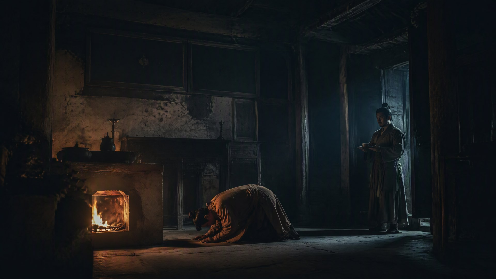

火家百年

火焱走了，火家没有散。
万历四十年，百曲火家老屋，迎来了一位远客。他自称是来寻一口灶——一口“烧了二百年的灶”。村人把他领到老屋，推开门，那口灶还在，炉膛里的火，还跳着。来人跪在灶前，磕了三个头，说：“我家祖上，是当年火家海船上的一个水手。火大使救过他一条命。两百年前他立了规矩——火家后人，凡到松江，必来百曲，替火家添一把柴。”
这样的人，火家见了很多。有当年灶火号伙计的后人，有火锻铁匠的后人，有蒲家海船的后人，有泉州仓栈旧户的后人。他们散在各地，各自成家，可每隔一两代，总有人会走到百曲，走到这口老灶前，添一把柴，磕一个头。
火家后人，一代一代地，守着这口灶。
崇祯十七年，明朝亡了。清兵南下，江浙震动。火家那一代的当家人，是个叫火承祖的老秀才。清兵到松江时，火承祖把全家叫到跟前，只吩咐了一件事：“把灶烧旺。谁来，火家都是种田的、读书的。”
有人劝他，说火家出过海路大使，火锻军器天下闻名，如今新朝初立，正是复起的机会。火承祖只回了一句：“火家祖训——永世不入京，不为官，不领兵。明朝不仕，清朝也不仕。火家的官，早就做完了。”
清兵过境，火家毫发无伤。因为火家，实在没什么好抢的——几亩薄田，一间义学，一口老灶。而火承祖，在清兵走后，带着火家子弟，把义学重新修葺一新，继续教书。
康熙年间，火家出了个有名的塾师，叫火启元。他在百曲义学教书四十年，教出来的学生，有做了官的，有成了名的，可火家自己的子弟，依旧恪守祖训，不为官，不领兵，只读书，只教书。有人问火启元：“火家数百年，代代出人才，为何从不入仕？”火启元答：“火家祖上有一句话——火家的火，是灶，是书，是心。灶在灶田里，书在义学里，心在百姓身上。入了仕，火就烧偏了。”
乾隆四十五年，百曲火家，出了一对兄弟。
哥哥叫火观若，弟弟叫火始然。两个都是读书种子，诗词做得极好，在松江一带薄有名气。他们守着火家的义学，一边教书，一边写诗。他们写松江的海，写百曲的灶，写那些几百年前，从这片灶烟里走出去的、如今已没人记得的人和事。
有一个本乡人，姓冯，名金伯，是个地方上有名的文人，正在辑一部关于海曲（今上海一带）的诗集，四处搜罗本乡诗人的旧作和轶事。他听说百曲火家世代书香，藏着不少祖传的诗稿和掌故，便登门拜访。
火观若、火始然把冯金伯迎进火家老屋。老屋的墙上，那口烧了几百年的灶还烧着；供桌上，直脱儿的牌位前，那两块旧砖和炉心石，已经摆了数百年，摸上去，还是温的。
冯金伯看着这一切，看着墙上那块“灶火为证，方可归汉”的老匾，看着灶膛里那团烧了几百年也没熄过的火，忽然说了一句：
“火家，是一本活着的历史。”
火观若笑了：“冯先生说笑了。火家哪有什么历史？不过是一户人家，守着一口灶，读了几百年的书。”
“这，就是历史。”冯金伯说，“这海曲一方水土，几百年的风物、人情、兴衰，都在这口灶的烟里了。”
他顿了顿，郑重地对火家兄弟说：“火家的诗稿，火家的掌故，火家这几百年传下来的东西——请二位，助我一并辑入《海曲诗抄》。让这方水土的人，往后都记得，海曲有个火家，烧了几百年的灶，读了几百年的书，护了几百年的乡里。”
火观若和火始然对视一眼。
他们想起祖训里那句“火家的火，是灶，是书，是心”，又想起那个叫火焱的老祖宗，几百年前，在刀口下指着灶膛，说出的那一声“姓火”。
“好。”火观若说，“火家的诗，火家的书，火家的火——都交给先生。让它们，替火家，活在纸墨里，传下去。”
灶膛里的火，赤红赤红地跳着。
窗外，海曲的风吹过百曲的灶烟，吹过几百年不变的江海，吹向一个更远的将来。
· 第五卷《祖境》 ·